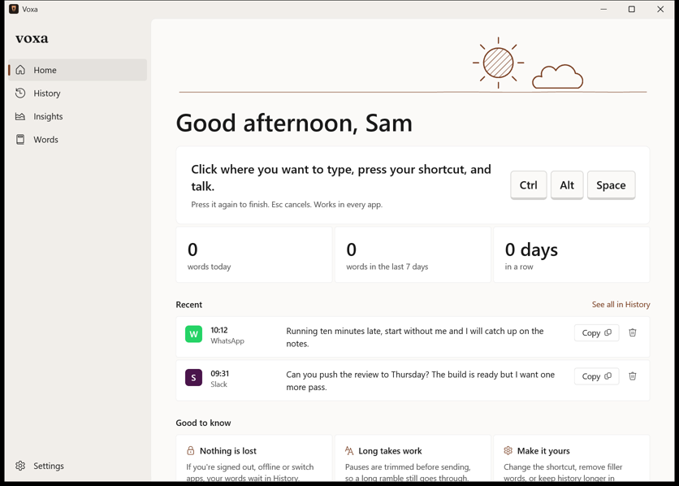
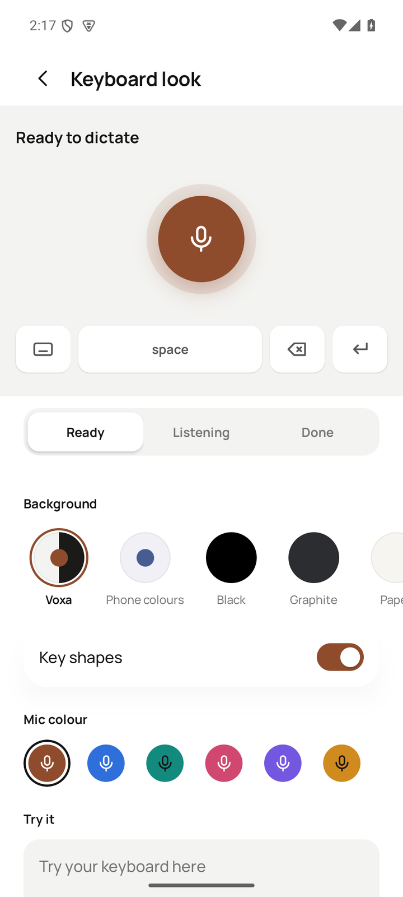

Talk instead of typing.
Slack
# launch-notes
A
Alexandria
10:02
Standup moved to 10:15. Notes are in the doc.
Message #launch-notes
Running ten minutes late, start without me and I will catch up on the notes.
v
Slack
0:00
Writing it out
Pasted in Slack
Your clipboard is back as it was
Cancel
Pause
Stop
Voice dictation into any app
Windows
macOS
Android
Open source, Apache-2.0